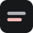

Web Translate
分段式网页翻译，中英对照。只翻你正在看的那一屏，翻过的存在本地，重看不再花钱。
模型与接口
本卡片的五项属于当前配置，其余设置全局共享。切换配置会让已有译文重翻。
只填地址、模型和推理写法，不动你的 Key。换下一代模型时，改「模型」那一栏的字符串就行。
OpenAI 兼容接口，填到 /v1 即可。已是完整路径就在结尾加 #。
只存在本机浏览器里，不同步、不外发。
换模型只改这里，别的设置不用动。
只决定用哪个字段名发给服务商，强度在弹窗里选。只有第一项能真正关掉推理，服务商报 400 时才换其他项。
省 token
分批大小、并发、短文本门槛、领域提示都已经按「读长文章」调好，不再单独开放 —— 调它们的收益很小，调错了却会直接抬高错位率。这里只剩两件真正因人而异的事。
正文容器认不出来时会自动退回整页，弹窗里会写明。个别页面翻不全，就在弹窗里临时切「整页都翻」。
这么久没再看过才清理，重看会重新计时。
超出时先淘汰最久没看的。
译文外观
相对原文的比例。1.00 = 和原文一样大。
We propose a new simple network architecture, the Transformer, based solely on attention mechanisms, dispensing with recurrence and convolutions entirely.
自动翻译的网站
打开就自动翻译。其余网站按 Alt+A 或点插件图标手动开。
数据
—
恢复默认
把所有设置改回出厂值，不动缓存和用量统计。
点两下确认，不可撤销。